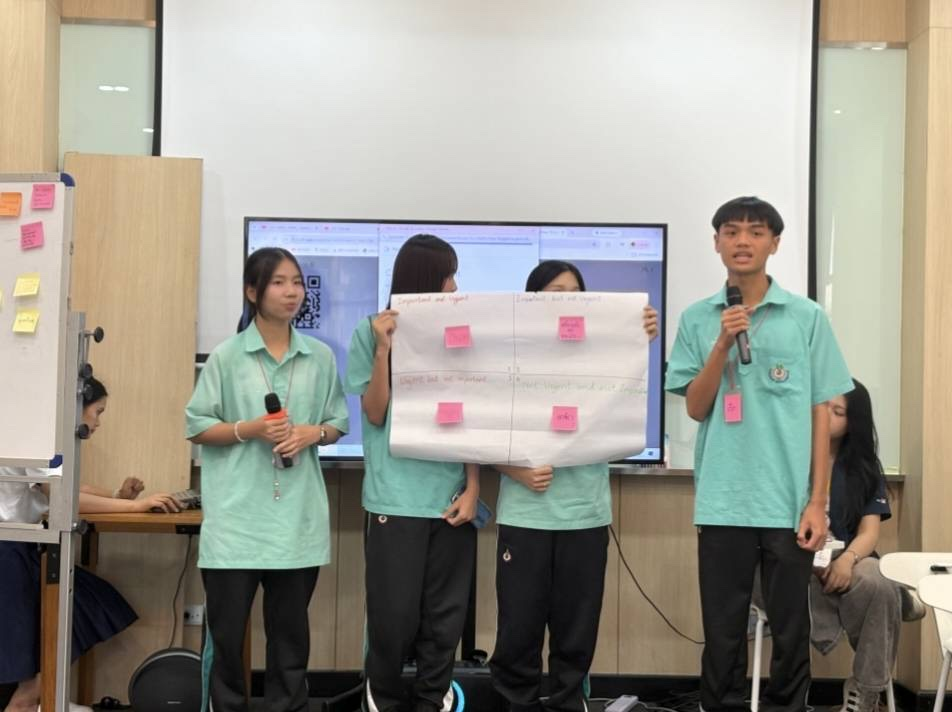
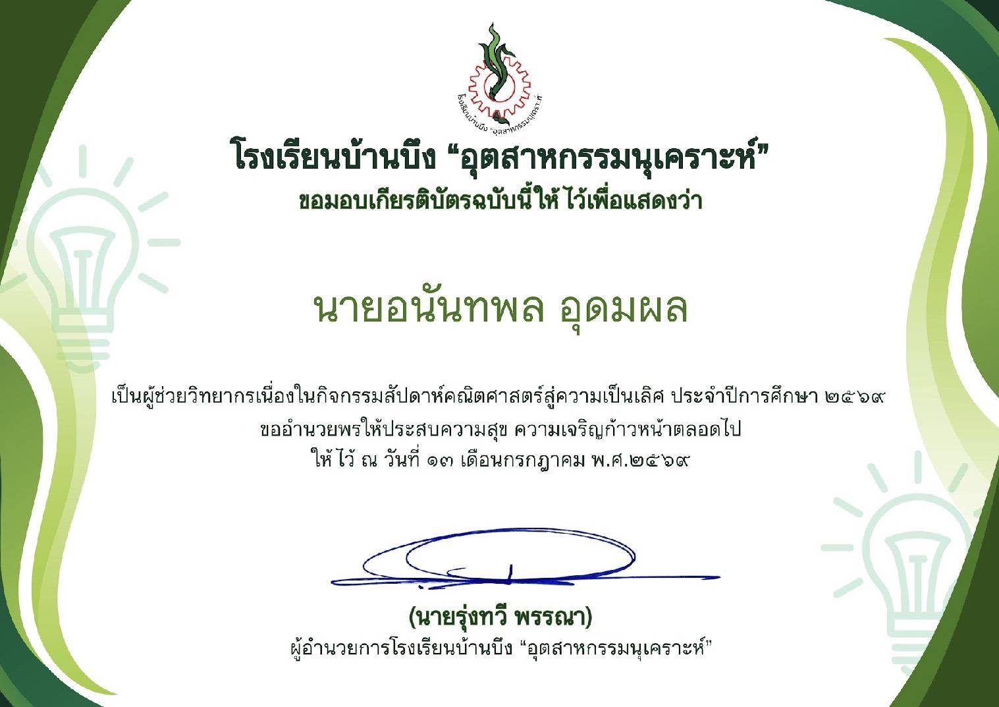

🎖️ ผลงานและกิจกรรม
รวบรวมผลงาน กิจกรรม และประสบการณ์ ที่ได้พัฒนาความรู้และทักษะของผม
🏆 ด้านวิชาการ
ผลงานที่ 1 : HIGH CALIBER ENGINEERING COMPETENCY TEST 2026 ระดับ EMERGING CALIBER

ได้เข้าร่วมสอบวัดความรู้ “HIGH CALIBER ENGINEERING COMPETENCY TEST 2026” ของคณะวิศวกรรมศาสตร์ สถาบันเทคโนโลยีพระจอมเกล้าเจ้าคุณทหารลาดกระบัง และได้รับคะแนนในระดับ EMERGING CALIBER กิจกรรมนี้ช่วยพัฒนาความรู้ด้านวิศวกรรม การคิดวิเคราะห์ และการแก้ไขปัญหา
ผลงานที่ 2 : WORKSHOP หัวข้อ การทดสอบวัสดุวิศวกรรมโยธา [Non-EE]

ได้เข้าร่วม WORKSHOP หัวข้อ “การทดสอบวัสดุวิศวกรรมโยธา [Non-EE]” ในงาน K-ENGINEERING WORLD TOUR AND COMPETENCY CHALLENGE 2026 ณ คณะวิศวกรรมศาสตร์ สถาบันเทคโนโลยีพระจอมเกล้าเจ้าคุณทหารลาดกระบัง ทำให้ได้เรียนรู้เกี่ยวกับวัสดุทางวิศวกรรมโยธา และได้เห็นแนวทางการทดสอบวัสดุในงานวิศวกรรม
ผลงานที่ 3 : WORKSHOP หัวข้อ Mini Startup Camp [Non-EE]


ได้เข้าร่วม WORKSHOP หัวข้อ “Mini Startup Camp [Non-EE]” ในงาน K-ENGINEERING WORLD TOUR AND COMPETENCY CHALLENGE 2026 ณ คณะวิศวกรรมศาสตร์ สถาบันเทคโนโลยีพระจอมเกล้าเจ้าคุณทหารลาดกระบัง กิจกรรมนี้ช่วยฝึกการคิดสร้างสรรค์ การวางแผน การทำงานร่วมกับผู้อื่น และการนำแนวคิดมาต่อยอดให้เกิดเป็นผลงาน
ผลงานที่ 4 : นักเรียนจิตอาสาในงานเปิดบ้านวิชาการ “BBU JOB FAIR”


ได้เข้าร่วมเป็นนักเรียนจิตอาสา ในงานเปิดบ้านวิชาการ “BBU JOB FAIR” เมื่อวันที่ 29 มกราคม พ.ศ. 2569 กิจกรรมนี้ช่วยฝึกความรับผิดชอบ การทำงานร่วมกับผู้อื่น การช่วยเหลือผู้อื่น และการทำงานอย่างเป็นระบบ
👑 ด้านภาวะผู้นำ
ผลงานที่ 1 : ผู้ช่วยวิทยากรเนื่องในกิจกรรม สัปดาห์คณิตศาสตร์สู่ความเป็นเลิศ ประจำปีการศึกษา 2569


ได้รับหน้าที่เป็นผู้ช่วยวิทยากร เนื่องในกิจกรรม “สัปดาห์คณิตศาสตร์สู่ความเป็นเลิศ” ประจำปีการศึกษา 2569 ทำให้ได้ฝึกภาวะผู้นำ ความรับผิดชอบ การสื่อสาร การทำงานร่วมกับผู้อื่น และการช่วยถ่ายทอดความรู้ให้กับผู้เข้าร่วมกิจกรรม